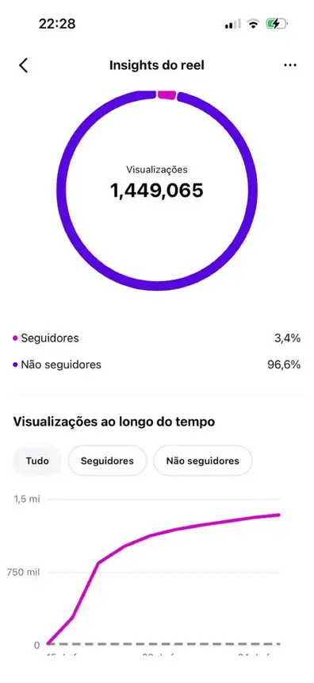
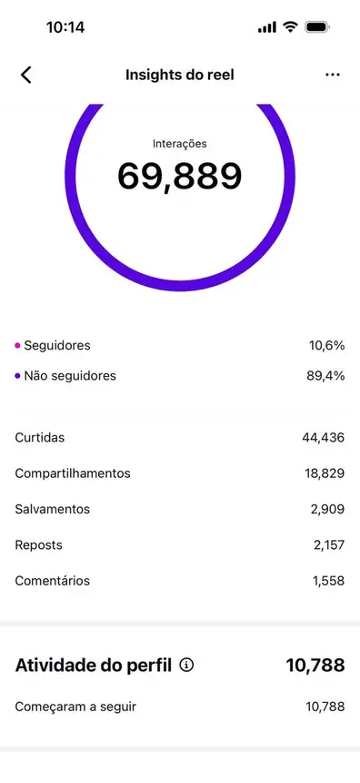
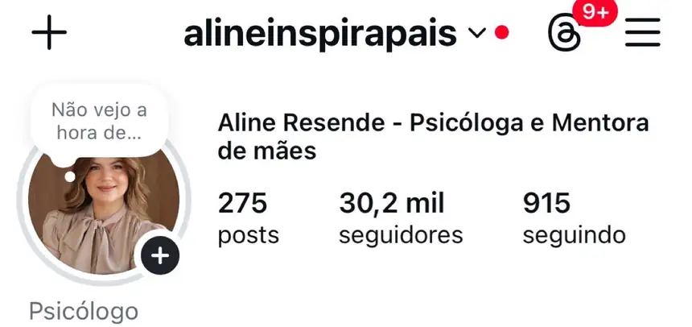
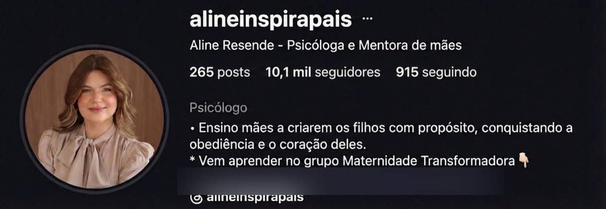
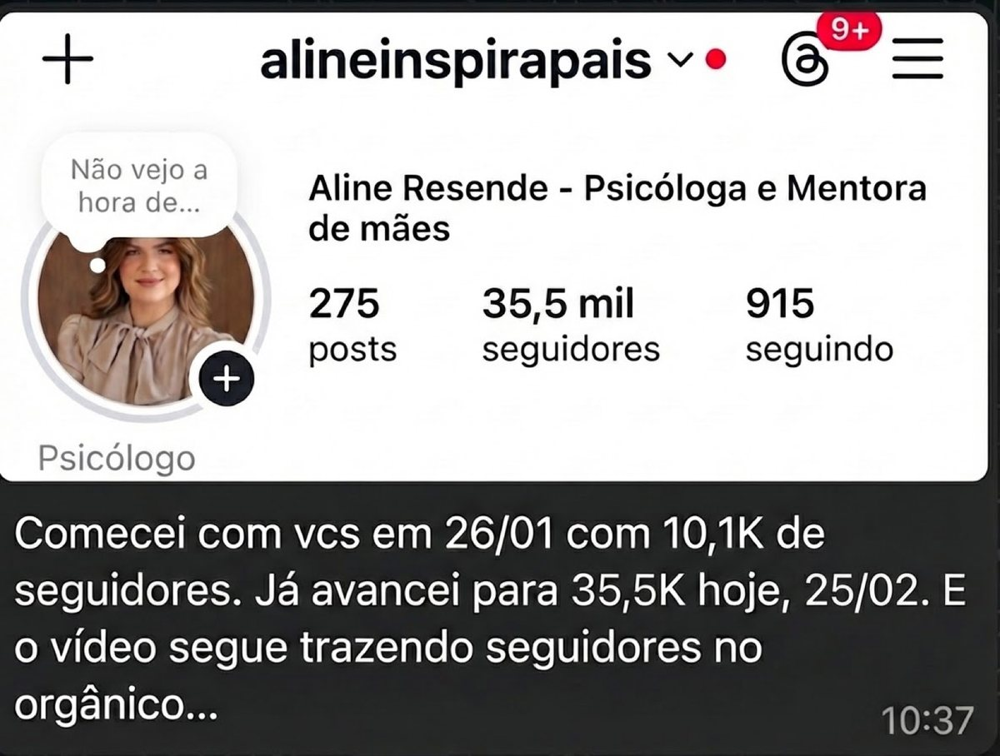
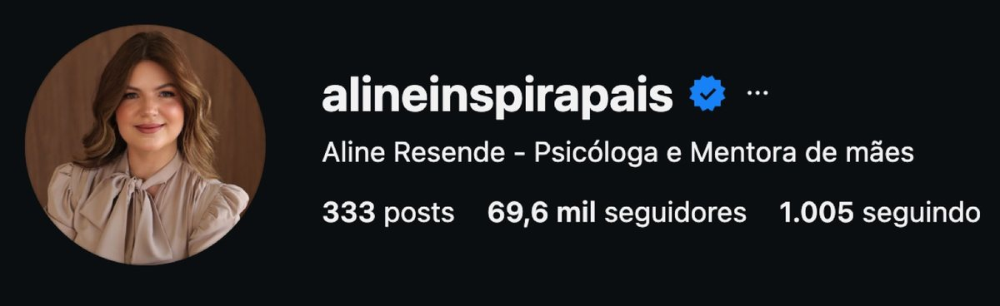
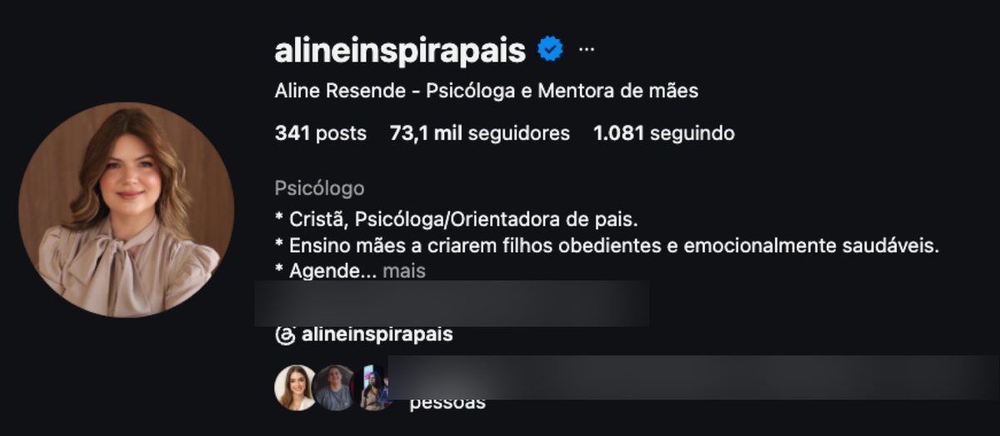
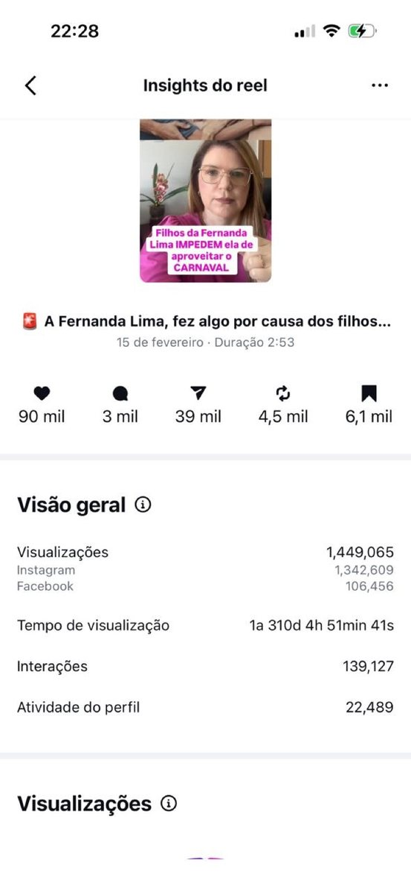
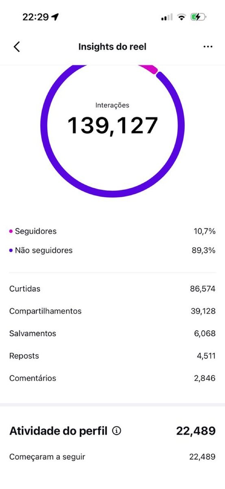

Resultado

Aline Resende
@alineinspirapais
psicóloga · criação de filhos
De 10,3 mil a 93,2 mil seguidores
10,3 mil → 93,2 mil seguidores
5,7 milhões de visualizações nos conteúdos
▶ Consulta 40% mais cara e agenda cheia
Antes e hoje

Os prints










Os conteúdos
A história
Entrou com 10,3 mil seguidores, 80% vindos de anúncio. Um único reel trouxe 10.788 seguidores e, em 3 meses, ela chegou a 60 mil sem tráfego. Hoje: agenda cheia e consulta mais cara.